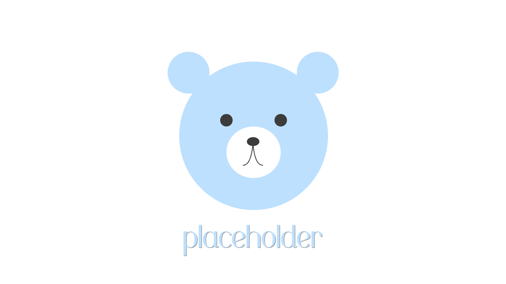

Finder
Fall 2020
A Django group project implementing various frameworks and libraries to create an event finder. Users are able to sign up and sign in with a traditional email method or with a Google account. Finder finds their current location and finds all events within a certain radius of their location. Users are also able to create their own events and navigate to other user's profiles.
Python
Django
HTML/CSS
JavaScript
BootStrap
Git
OAuth
Google Maps API
Heroku
Travis CI

Connect 4 AI
Fall 2020
A Pygame group project to implement various different artificial intelligence algorithms including expectimax and minimax. Combined multiple different heuristics, such as good and bad factors and number of 2- and 3-in-a-rows. Conducted experiments to create a cohesive program with single and multiplayer modes and varying levels of difficulty that corresponds with the results from the experiments.
Python
Pygame

QuinnBot
Fall 2020
An individual projects that integrates user input from Python and Prolog rules to simulate talking to me. Currently has 100+ commands and is continuosly expanding to further extrapolate my personality. Currently, it has the ability to greet, ask and answer basic questions, and say goodbye.
Prolog
Python
Reddit Notifications
June 2020
A basic individual project that gives users desktop notifications when a subreddit has a new post. Clicking on the notification will navigate the user to that site, so they can like, comment, and/or interact with the new post however they would like. This was originally built to farm turnips on Animal Crossing during quarantine, but can be a useful tool to modulate forums without continuously refreshing the page.
Praw
Python